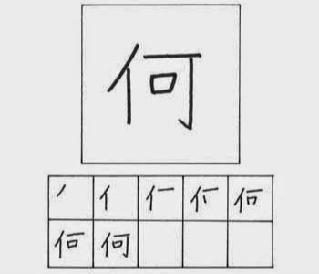
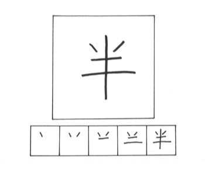
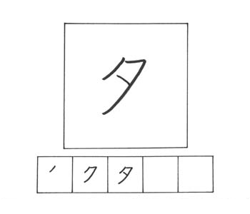

PELAJARAN 14
Pada materi dibawah ini, merupakan materi kanji yang berkaitan dengan waktu.

NANI / なに
goresan : 7
arti : apa
kunyomi : nan, nani
onyomi : ka
kotoba :
何故 naze / mengapa
何処 doko / dimana
何時 nanji / jam berapa
何度 nando / berapa kali

HAN / はん
goresan : 5
arti : setengah
kunyomi : naka-ba
onyomi : han
kotoba :
半分 hanbun /
setengah
半ば nakaba /
separuh
前半 zenhan /
babak pertama
半額 hangaku /
setengah harga

WA-KERU / わーける
goresan : 4
arti : menit
kunyomi : wa-keru, wa-kareru
onyomi : bun, fun
kotoba :
分析 bunseki / analisa
気分 kibun / mood
十分 juubun / cukup
分かる wakaru /
mengerti

YUU / ゆう
goresan : 3
arti : senja
kunyomi : yuu
onyomi : seki
kotoba :
夕方 yuugata/ senja
夕食 yuushoku/makan malam
夕日 yuuhi /matahari terbenam
夕刊 yuukan / koran petang